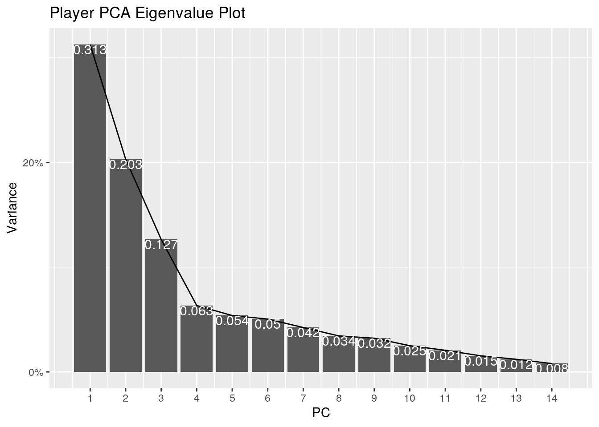

Since quarantine started, I have been bouncing between new and old hobbies and getting invested in them more than normally. Most reently, this passion has been towards soccer. Growing up, it was the main sport I played all the way up until part way through highschool when I stopped having the time to keep up all of my hobbies. Therefore, I decided to look for some datasets in relation to this for inspiration. When looking through fivethirtyeight, I found some really interesting projects about a topic that is always exciting, the World Cup.
In one project's datasets, there were comparisons between every player that played for over 30 minutes for each World Cup over 16 different variables such as "goals" and "touches in the box". These are stored as z-scores against the mean for that year's world cup. This means, the score represents the number of standard deviations above or below the mean performance that year for that specific stat.
The other project's dataset was predictions on the outcome of the world cup on a per match basis. This contained variables such as "chance of winning world cup" and "spi" which represents the team's estimated overall strength score. This is derived from the global offensive and global defensive scores, which are calculated as the number of goals that a team would be expected to score against and get scored on by an average team, based on recent international match results.
I was instantly curious about how the predictions would reflect the actual performance of the teams, as well as how each player compared to each other in the different stats. Would the global offensive rank accurately reflect the number of goals the average player on the team scored? Does the spi rating accurately reflect how far the teams will go? I was excited to learn more.
#IMPORTS
library(ggplot2)
library(tidyverse)## ── Attaching packages ───────────────────────────────────────────────────── tidyverse 1.3.0 ──## ✓ tibble 3.0.3 ✓ dplyr 1.0.1
## ✓ tidyr 1.1.1 ✓ stringr 1.4.0
## ✓ readr 1.3.1 ✓ forcats 0.5.0
## ✓ purrr 0.3.4## ── Conflicts ──────────────────────────────────────────────────────── tidyverse_conflicts() ──
## x dplyr::filter() masks stats::filter()
## x dplyr::lag() masks stats::lag()library(dplyr)
library(pastecs)##
## Attaching package: 'pastecs'## The following objects are masked from 'package:dplyr':
##
## first, last## The following object is masked from 'package:tidyr':
##
## extractlibrary(readr)
library(tidyr)
library(cluster)
world_cup_comparisons<- read_csv("world_cup_comparisons.csv")## Parsed with column specification:
## cols(
## player = col_character(),
## season = col_double(),
## team = col_character(),
## goals_z = col_double(),
## xg_z = col_double(),
## crosses_z = col_double(),
## boxtouches_z = col_double(),
## passes_z = col_double(),
## progpasses_z = col_double(),
## takeons_z = col_double(),
## progruns_z = col_double(),
## tackles_z = col_double(),
## interceptions_z = col_double(),
## clearances_z = col_double(),
## blocks_z = col_double(),
## aerials_z = col_double(),
## fouls_z = col_double(),
## fouled_z = col_double(),
## nsxg_z = col_double()
## )wc_forecasts <- read_csv("wc_forecasts.csv")## Parsed with column specification:
## cols(
## .default = col_double(),
## forecast_timestamp = col_character(),
## team = col_character(),
## group = col_character(),
## timestamp = col_character()
## )## See spec(...) for full column specifications.In this first step, I imported the packages that are going to be needed throughout the project, as well as imported my two original datasets. It was time to start tidying my data and removing the parts I didn't need.
#TIDYING
#taking team, gl o gl d, and odds of winning title
forecasts<-wc_forecasts %>% select(1:2,4:6,21) #%>% mutate(Rounds_progressed=forecast_timestamp)
forecasts<-forecasts %>% mutate(forecast_timestamp=recode(forecast_timestamp,"2018-06-13 15:00:46 UTC"="0","2018-06-19 16:56:16 UTC"="1","2018-06-24 19:56:15 UTC"="2","2018-06-28 19:57:31 UTC"="3","2018-07-03 20:55:49 UTC"="4","2018-07-07 20:53:40 UTC"="5","2018-07-14 15:56:19 UTC"="6","2018-07-15 16:54:57 UTC"="7"))
forecasts<- forecasts %>% rename("roundsProgressed"="forecast_timestamp")
#removing the teams that got knocked out from forecasts
forecasts = forecasts[!forecasts$win_league == 0.0000,]
#filtering comparisons
filteringwccomparisons<-world_cup_comparisons %>% filter(season=="2018")
#filteringwccomparisons %>% glimpse()
comparisons<-filteringwccomparisons %>% select(player,team,"goals"=goals_z,"expectedGoals"=xg_z,"crosses"=crosses_z,"boxTouches"=boxtouches_z,"passes"=passes_z,"progressivePasses"=progpasses_z,"takeons"=takeons_z,"progressiveRuns"=progruns_z,"tackles"=tackles_z,"interceptions"=interceptions_z,"clearances"=clearances_z,"blocks"=blocks_z,"aerials"=aerials_z,"nonShotExpectedGoals="=nsxg_z)To begin, I removed the variables from the predictions data that I needed and put them into a forecast dataset. This consisted of the team name, spi, global offense score, global defense, score, and chances of winning the cup. I also changed the prediction timestamp variable in order for it to reflect the rounds of the world cup each team progressed. Finally, I removed the teams as they were knocked out of the running. Next I began to clean the player comparisons data. First, I filtered all data from world cups previous to 2018. Then, I selected the statistics I wanted, removing ones related to fouls, as that can be confusing to interpret when looking at a team basis, and renamed the variables to ones that would be easier to interpret.
#DESCRIPTIVE STATISTICS
#descriptive stats of all players
df.sum <- comparisons %>%
select(3:16) %>%
summarise_each(funs(min = min,q25 = quantile(., 0.25),median = median,q75 = quantile(.,0.75),max = max,mean = mean,sd = sd))## Warning: `summarise_each_()` is deprecated as of dplyr 0.7.0.
## Please use `across()` instead.
## This warning is displayed once every 8 hours.
## Call `lifecycle::last_warnings()` to see where this warning was generated.## Warning: `funs()` is deprecated as of dplyr 0.8.0.
## Please use a list of either functions or lambdas:
##
## # Simple named list:
## list(mean = mean, median = median)
##
## # Auto named with `tibble::lst()`:
## tibble::lst(mean, median)
##
## # Using lambdas
## list(~ mean(., trim = .2), ~ median(., na.rm = TRUE))
## This warning is displayed once every 8 hours.
## Call `lifecycle::last_warnings()` to see where this warning was generated.df.sum %>% pivot_longer(contains("_")) %>% separate(name,into=c("Stat","Type")) %>% pivot_wider(names_from = "Type",values_from="value")## # A tibble: 14 x 8
## Stat min q25 median q75 max mean sd
## <chr> <dbl> <dbl> <dbl> <dbl> <dbl> <dbl> <dbl>
## 1 goals -0.42 -0.42 -0.42 -0.42 6.46 -2.89e- 3 1.00
## 2 expectedGoals -0.59 -0.59 -0.41 0.0425 5.59 4.29e-18 1.00
## 3 crosses -0.51 -0.51 -0.51 0.27 7.26 -1.36e- 3 1.00
## 4 boxTouches -0.8 -0.8 -0.35 0.34 5.97 -7.32e- 4 1.00
## 5 passes -1.25 -0.755 -0.255 0.51 5.12 -4.85e-19 1.00
## 6 progressivePasses -1.1 -0.795 -0.28 0.59 5.53 7.14e- 5 1.00
## 7 takeons -0.67 -0.67 -0.26 0.17 6.76 -2.68e- 4 1.00
## 8 progressiveRuns -0.84 -0.67 -0.34 0.31 7.34 -1.20e- 3 1.00
## 9 tackles -0.82 -0.82 -0.335 0.39 3.71 1.21e- 3 0.999
## 10 interceptions -0.79 -0.79 -0.3 0.290 4.24 -9.50e-18 1.00
## 11 clearances -0.8 -0.71 -0.38 0.35 4.64 7.50e- 4 1.00
## 12 blocks -0.45 -0.45 -0.45 0.0925 10.9 3.07e- 3 0.998
## 13 aerials -0.89 -0.67 -0.31 0.43 5.38 1.32e- 3 0.999
## 14 nonShotExpectedGoals -0.77 -0.662 -0.33 0.325 7.28 7.86e- 4 0.999#grouped by team
df.teams <- comparisons %>%
group_by(team) %>% select(3:16) %>%
summarise_each(funs(max = max,mean = mean))## Adding missing grouping variables: `team`df.teams %>% pivot_longer(contains("_")) %>% separate(name,into=c("Stat","Type")) %>% pivot_wider(names_from = "Stat",values_from="value")## # A tibble: 64 x 16
## team Type goals expectedGoals crosses boxTouches passes progressivePass…
## <chr> <chr> <dbl> <dbl> <dbl> <dbl> <dbl> <dbl>
## 1 Arge… max 3.02 3.08 1.24e+0 1.52 3.25 0.96
## 2 Arge… mean 0.123 -0.103 -7.84e-2 -0.00579 0.31 -0.23
## 3 Aust… max 4.17 4.51 7.26e+0 3.91 3.13 3.12
## 4 Aust… mean -0.114 0.0647 3.20e-1 0.0767 0.390 0.417
## 5 Belg… max 3.51 3.05 3.15e+0 2.55 2.03 1.59
## 6 Belg… mean 0.285 0.139 -4.76e-4 0.0205 0.0195 -0.0781
## 7 Braz… max 2.33 5.02 4.15e+0 5.82 2.12 1.94
## 8 Braz… mean 0.228 0.525 2.32e-1 0.741 0.459 0.0324
## 9 Colo… max 4.34 1.68 2.18e+0 1.85 1.06 1.64
## 10 Colo… mean 0.109 -0.209 -1.21e-1 -0.322 -0.113 -0.0628
## # … with 54 more rows, and 8 more variables: takeons <dbl>,
## # progressiveRuns <dbl>, tackles <dbl>, interceptions <dbl>,
## # clearances <dbl>, blocks <dbl>, aerials <dbl>, nonShotExpectedGoals <dbl>I was curious how each stat was distributed between all the players being compared in the 2018 World Cup, as well as how the teams compared in these same statistics. In order to see that, I calculated descriptive statistics first for the entirety of the player's stats. Then, I grouped each of the players by team, and found the average and max of each stat for each team. Essentially, if each team was boiled down to a single player, these scores represent how his stats compare to the average team in the competition. I also wanted to include the max of each stat from each team in order to highlight the individual performances of star players on the teams. One example of this is Argentina, who have Messi, statistically the best player of all time. While the team goal scoring average is only 0.123, barely above average, Messi raises their max to 3.020
#JOINING DATASETS
teammean <- comparisons %>%
group_by(team) %>% select(3:16) %>%
summarise_each(funs(mean = mean))## Adding missing grouping variables: `team`teammean<- teammean %>% pivot_longer(contains("_")) %>% separate(name,into=c("Stat","Type")) %>% pivot_wider(names_from = "Stat",values_from="value") %>% select(-c("Type"))
meanjoinf<-full_join(forecasts,teammean,by="team") %>% drop_na()In this step, I first quickly created a dataset that would store these team averages for each stat in a dataset called teammean. Next, I joined forecasts and teammean by team with a full join as I wanted to retain all the variables. This resulted in a dataset that contained the teams in each round, their spi, global offense rank, global defense rank, as well as their predicted chances of winning the cup. These teams were also paired with their average stat z scores to show what stats they excelled and did not excell in as a team.Nothing was dropped.
#PLOTS
#correlation heatmap
cormat <- meanjoinf%>% select_if(is.numeric) %>% cor(use="pair")
tidycor <- cormat %>% as.data.frame() %>% rownames_to_column("var1") %>%
pivot_longer(-1,names_to="var2",values_to="correlation")
tidycor## # A tibble: 324 x 3
## var1 var2 correlation
## <chr> <chr> <dbl>
## 1 spi spi 1
## 2 spi global_o 0.946
## 3 spi global_d -0.911
## 4 spi win_league 0.536
## 5 spi goals 0.576
## 6 spi expectedGoals 0.499
## 7 spi crosses 0.211
## 8 spi boxTouches 0.473
## 9 spi passes 0.502
## 10 spi progressivePasses 0.0915
## # … with 314 more rowstidycor%>%ggplot(aes(var1,var2,fill=correlation))+
geom_tile()+
scale_fill_gradient2(low="blue",mid="white",high="red")+
geom_text(aes(label=round(correlation,2)),color = "black", size = 2)+
theme(axis.text.x = element_text(angle = 90, hjust=1))+
coord_fixed()+ggtitle("Correlation Heat Map for Player Stats")+labs(x="Stat 1",y="Stat 2")This is the correlation heat map for each stat in the cup. It shows a good visualization of how strong of a relationship each stat has with each other. With this, you can begin to get an idea of what stats tend to interact due to the roles of each position, but more on that later. It is interesting to see how, for example, clearances have a negative correlation with a significant number of the other stats. Maybe they aren't as helpful as they appear?
meanjoinf2<-meanjoinf%>% filter(roundsProgressed==1) %>% mutate(inSpi=spi) %>% select(2,21)
meanjoinf2<-full_join(meanjoinf,meanjoinf2,by="team")
ggplot(data=meanjoinf2, aes(x=roundsProgressed,y=win_league, color=inSpi))+geom_point(size=2)+geom_line(aes(group=team))+scale_color_gradient(low="red",high="blue")+ggtitle("Team's Chances of Winning the Cup as a Function of Rounds Progressed")+labs(x="Rounds progressed",y="Chances of Winning the Cup")This graph is very interesting as it tracks the rounds each team progresses, as well as how each round affects their odds of winning the cup. By having the color set to the initial spi of each team, we can clearly see how strong the team was predicted to be going into the competition.
meanjoinf2 %>% arrange(desc(global_o)) %>% ggplot(aes(x=global_o,y=reorder(team,-global_o),fill=goals))+geom_bar(stat="summary")+geom_errorbar(stat="summary")+ggtitle("Distribution of Global Offensive Score Between Teams vs Goals Scored")+labs(x="Global Offensive rating",y="Team")+scale_fill_gradient(low="blue",high="red")## No summary function supplied, defaulting to `mean_se()`
## No summary function supplied, defaulting to `mean_se()`In this graph, each team is stacked in order of their summarized global offense, with error bars to reflect change throughout tournament, filled in with a z score distribution of the goals scored in the tournament. While this should have a gradient from blue at the top to red at the bottom, there are definitely some exceptions. Maybe Russia's homecourt advantage had a pretty significant effect!
comparisons %>% dplyr::select(3:16) %>% scale %>% princomp->indv_pca
summary(indv_pca, loadings=T)## Importance of components:
## Comp.1 Comp.2 Comp.3 Comp.4 Comp.5
## Standard deviation 2.0905092 1.6848464 1.3298459 0.94153921 0.86722745
## Proportion of Variance 0.3127176 0.2031275 0.1265467 0.06343442 0.05381635
## Cumulative Proportion 0.3127176 0.5158452 0.6423919 0.70582628 0.75964263
## Comp.6 Comp.7 Comp.8 Comp.9 Comp.10
## Standard deviation 0.83958721 0.76986230 0.69303099 0.67058702 0.5914223
## Proportion of Variance 0.05044055 0.04241059 0.03436794 0.03217796 0.0250290
## Cumulative Proportion 0.81008318 0.85249376 0.88686170 0.91903966 0.9440687
## Comp.11 Comp.12 Comp.13 Comp.14
## Standard deviation 0.53690677 0.46304453 0.41001516 0.332939696
## Proportion of Variance 0.02062747 0.01534241 0.01202951 0.007931939
## Cumulative Proportion 0.96469614 0.98003855 0.99206806 1.000000000
##
## Loadings:
## Comp.1 Comp.2 Comp.3 Comp.4 Comp.5 Comp.6 Comp.7 Comp.8
## goals 0.209 0.282 0.295 0.657 0.196
## expectedGoals 0.252 0.326 0.347 0.276 -0.117
## crosses 0.255 0.137 -0.378 -0.460 0.102 -0.507 0.163
## boxTouches 0.260 0.290 0.337 -0.348 0.139 -0.106 -0.307
## passes 0.371 -0.261 -0.143 0.129 0.163 -0.167
## progressivePasses 0.259 -0.290 -0.225 -0.278 0.298 0.120 0.385 -0.302
## takeons 0.280 0.272 -0.143 0.152 -0.255 -0.287 0.374 0.522
## progressiveRuns 0.377 -0.113 0.146 -0.157 -0.423 0.218 -0.216
## tackles 0.272 -0.172 -0.114 0.556 0.388 -0.236 0.317
## interceptions 0.260 -0.321 0.252 0.232 -0.130
## clearances 0.141 -0.372 0.271 -0.403 0.114 0.520
## blocks 0.155 -0.322 0.245 -0.647 -0.496
## aerials 0.176 -0.174 0.489 -0.237 -0.380 0.251
## nonShotExpectedGoals= 0.345 0.281 -0.216 -0.246 -0.139 -0.164
## Comp.9 Comp.10 Comp.11 Comp.12 Comp.13 Comp.14
## goals 0.117 0.285 0.168 0.422 0.108
## expectedGoals -0.223 -0.169 -0.678 -0.221 -0.158
## crosses 0.207 -0.195 -0.200 0.376
## boxTouches -0.123 -0.383 0.349 0.452
## passes -0.296 0.718 0.281
## progressivePasses -0.237 -0.361 0.231 -0.366
## takeons -0.461 0.141
## progressiveRuns 0.147 0.619 -0.341
## tackles -0.464 -0.172 -0.103
## interceptions 0.802 -0.140
## clearances -0.486 0.288
## blocks -0.155 -0.309
## aerials 0.623 -0.135
## nonShotExpectedGoals= -0.138 0.193 0.307 -0.701This is a pca of all of the players, not grouped by team. PC 1 was a positive boost in all stats, representing overall abilities of the player, not specializing yet. PC 2 divided the players between those with higher offensive stats (touches in the box, goals, crosses, etc.) and the players with higher defensive stats (interceptions, clearances, blocks, etc.). Then, PC 3 takes it a step further and divides the offensive stats up between those who are scoring the goals and making the final touch or header, and those who are crossing the ball in or passing for the assist.
eigvals<-indv_pca$sdev^2
varprop<-eigvals/sum(eigvals)
ggplot() + geom_bar(aes(y=varprop, x=1:14), stat="identity") + xlab("") + geom_path(aes(y=varprop, x=1:14))+geom_text(aes(x=1:14, y=varprop, label=round(varprop, 3)), vjust=1, col="white", size=4)+
scale_y_continuous(breaks=seq(0, .8, .2), labels = scales::percent) +
scale_x_continuous(breaks=1:14)+ggtitle("Player PCA Eigenvalue Plot")+labs(x="PC",y="Variance")
eigvals## Comp.1 Comp.2 Comp.3 Comp.4 Comp.5 Comp.6 Comp.7 Comp.8
## 4.3702286 2.8387073 1.7684902 0.8864961 0.7520835 0.7049067 0.5926880 0.4802920
## Comp.9 Comp.10 Comp.11 Comp.12 Comp.13 Comp.14
## 0.4496869 0.3497803 0.2882689 0.2144102 0.1681124 0.1108488Here we can see that the elbow occurs at PC 4
indv_pca$loadings[1:14, 2:3] %>% as.data.frame %>% rownames_to_column %>%
ggplot() + geom_hline(aes(yintercept=0), lty=2) +
geom_vline(aes(xintercept=0), lty=2) + ylab("PC3") + xlab("PC2") +
geom_segment(aes(x=0, y=0, xend=Comp.2, yend=Comp.3), arrow=arrow(), col="red") +
geom_label(aes(x=Comp.2*1.1, y=Comp.3*1.1, label=rowname))+ggtitle("Plot of loadings for Player pca")When plotting between PC2 and PC3, we can get an idea of the different roles that players play from correlation between these stats in the data, as well as what stats are significant for that role. With stats like goals, boxTouches, and expectedGoals all so tightly grouped, players that tend towards this will likely be strikers trying to get the final touch in for the team. On the other end of the spectrum, we see more defensive stats such as clearances and blocks being tightly grouped. Interestingly, aerials floats between these two groups as jumping for the ball is often happening between a defender and striker trying to score.
comparisons %>% mutate(PC2=indv_pca$scores[, 2], PC3=indv_pca$scores[, 3]) %>%
ggplot(aes(PC2, PC3, color=comparisons$goals)) + geom_point() + coord_fixed()+ scale_color_gradient(low="blue",high="red")+ggtitle("Player Distribution Between PC 2 vs PC 3")From this plot, we see how each player lies on this distribution. This gives us an idea of how these stats are distributed between the players and an idea of the playstyle that they have. The z score of goals scored by each player is overlayed by color, in order to see what stat distributions the players who scored the most goals tended to have. Not only is there an obvious trend left to right on goals scored, there is also a trend from the bottom up as the lower right quadrant had players who crossed the ball more often than they were in the air to score the goal.
teammean %>% dplyr::select(2:15) %>% scale %>% princomp->mean_pca
summary(mean_pca, loadings=T)## Importance of components:
## Comp.1 Comp.2 Comp.3 Comp.4 Comp.5
## Standard deviation 2.560618 1.3401506 1.05059467 0.98068025 0.9014289
## Proportion of Variance 0.483448 0.1324242 0.08138243 0.07091124 0.0599133
## Cumulative Proportion 0.483448 0.6158722 0.69725465 0.76816590 0.8280792
## Comp.6 Comp.7 Comp.8 Comp.9 Comp.10
## Standard deviation 0.85236080 0.6764024 0.63380438 0.49197959 0.46765860
## Proportion of Variance 0.05356822 0.0337342 0.02961902 0.01784656 0.01612568
## Cumulative Proportion 0.88164741 0.9153816 0.94500064 0.96284719 0.97897288
## Comp.11 Comp.12 Comp.13 Comp.14
## Standard deviation 0.38104381 0.276620925 0.232981093 0.0958470702
## Proportion of Variance 0.01070558 0.005641964 0.004002226 0.0006773575
## Cumulative Proportion 0.98967845 0.995320417 0.999322643 1.0000000000
##
## Loadings:
## Comp.1 Comp.2 Comp.3 Comp.4 Comp.5 Comp.6 Comp.7 Comp.8
## goals 0.118 0.789 0.181 0.350 0.114 0.123
## expectedGoals 0.274 -0.148 0.354 -0.356 -0.204 0.105 -0.489
## crosses 0.273 -0.298 -0.114 -0.187 0.239 -0.461 -0.462
## boxTouches 0.311 -0.343 -0.273 0.128 0.141 0.247
## passes 0.334 0.141 0.243 0.148
## progressivePasses 0.269 -0.170 -0.432 0.168 0.221 0.183 0.191
## takeons 0.203 -0.205 0.107 -0.891 -0.139
## progressiveRuns 0.354 -0.199 -0.140 0.269
## tackles 0.313 0.255 -0.136 0.307 0.131
## interceptions 0.297 0.234 0.100 0.283 0.444 -0.271
## clearances -0.232 -0.347 0.402 -0.135 -0.128 0.536 -0.341
## blocks 0.184 0.225 0.550 -0.555 0.140 -0.340 -0.243
## aerials -0.100 -0.563 0.401 0.244 0.237 -0.248 0.166
## nonShotExpectedGoals 0.325 -0.256 -0.167 -0.256 0.157 0.313
## Comp.9 Comp.10 Comp.11 Comp.12 Comp.13 Comp.14
## goals 0.290 0.272
## expectedGoals -0.264 -0.315 -0.400 -0.142
## crosses 0.114 0.451 -0.139 0.221
## boxTouches -0.147 0.237 0.722
## passes -0.134 -0.692 -0.227 -0.351 0.304
## progressivePasses 0.710 0.104 -0.211
## takeons 0.140 -0.209
## progressiveRuns 0.116 0.352 -0.565 -0.510
## tackles -0.381 -0.167 0.237 0.625 -0.243 -0.149
## interceptions -0.262 0.541 -0.286 -0.147 0.172
## clearances -0.121 -0.275 0.333 0.126
## blocks 0.182 -0.145 0.187
## aerials -0.271 -0.351 -0.216 -0.193
## nonShotExpectedGoals 0.147 0.442 -0.608This is a pca between the means of each team, in order to see how the teams would distribute in their stats comparatively. PC 1 is again a general ability stat, however interestingly this meant a slight negative correlation with aerials and a stronger negative correlation with clearances (again maybe clearances are overhyped). PC2 then divided teams between a more aggressive and defensive or reserve playstyle, seperating those with high numbers of crosses, touches in the box, and takeons, from those with higher rates of passing, blocking, and tackling.
eigvals<-mean_pca$sdev^2
varprop<-eigvals/sum(eigvals)
ggplot() + geom_bar(aes(y=varprop, x=1:14), stat="identity") + xlab("") + geom_path(aes(y=varprop, x=1:14))+geom_text(aes(x=1:14, y=varprop, label=round(varprop, 3)), vjust=1, col="white", size=4)+
scale_y_continuous(breaks=seq(0, .8, .2), labels = scales::percent) +
scale_x_continuous(breaks=1:14)+ggtitle("Team Mean PCA Eigenvalue Plot")+labs(x="PC",y="Variance")eigvals## Comp.1 Comp.2 Comp.3 Comp.4 Comp.5 Comp.6
## 6.556763335 1.796003764 1.103749152 0.961733754 0.812574073 0.726518930
## Comp.7 Comp.8 Comp.9 Comp.10 Comp.11 Comp.12
## 0.457520146 0.401707997 0.242043913 0.218704565 0.145194385 0.076519136
## Comp.13 Comp.14
## 0.054280190 0.009186661As we can see from the distribution of variance, PC 1 describes most of the variance, with up to 3 being quite considerable
mean_pca$loadings[1:14, 1:2] %>% as.data.frame %>% rownames_to_column %>%
ggplot() + geom_hline(aes(yintercept=0), lty=2) +
geom_vline(aes(xintercept=0), lty=2) + ylab("PC2") + xlab("PC1") +
geom_segment(aes(x=0, y=0, xend=Comp.1, yend=Comp.2), arrow=arrow(), col="red") +
geom_label(aes(x=Comp.1*1.1, y=Comp.2*1.1, label=rowname))+ggtitle("Plot of Loadings for Team Mean PCA")As we can see, most all stats are moving to the right with PC1, except for clearances and aerials. The stats are then split with more aggressive teams moving lower to the right while more defensive or reseved teams move higher on the y axis.
teammean %>% mutate(PC1=mean_pca$scores[, 1], PC2=mean_pca$scores[, 2]) %>%
ggplot(aes(PC1, PC2, color=teammean$team)) + geom_point() + coord_fixed()+ggtitle("Team Mean Stats Distributed Between PC 1 and 2")+labs(color="Team")This graph shows each team distributed among PC 1 and PC 2, with teams farther to the right having higher scores in key stats. From PC 2, we can get an idea of the agressiveness of each team as well. Interestingly, when looking at the cluster of three teams farthest to the right, they are all quite balanced in respect to PC 2's variance.